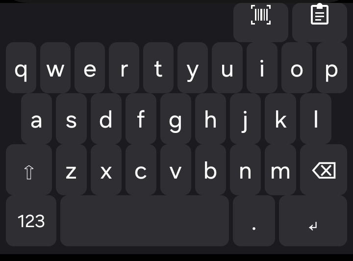
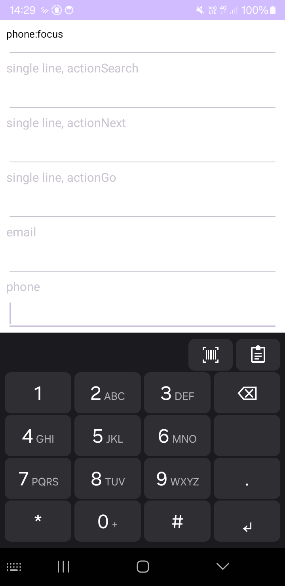
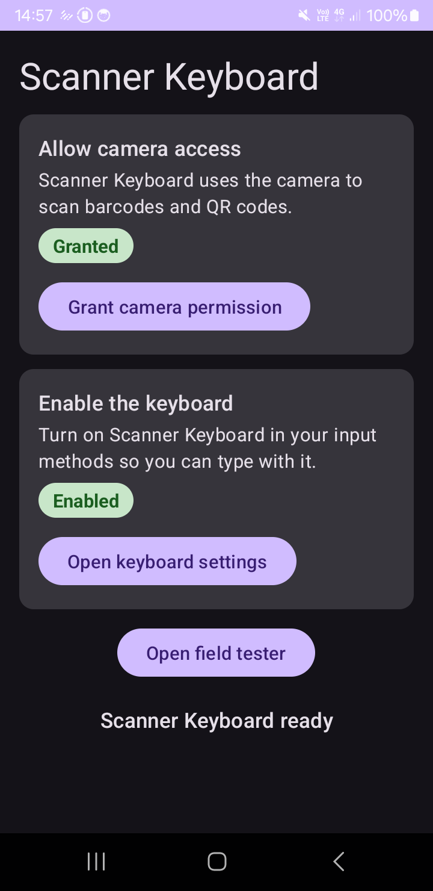
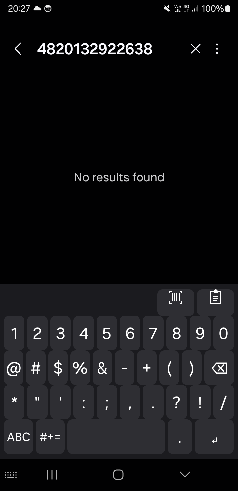
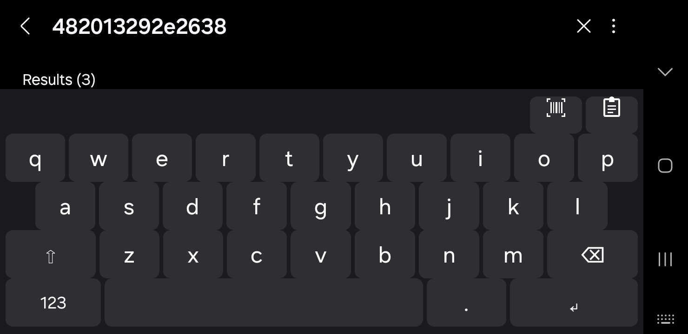
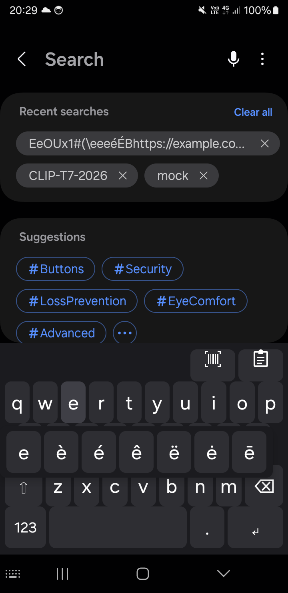
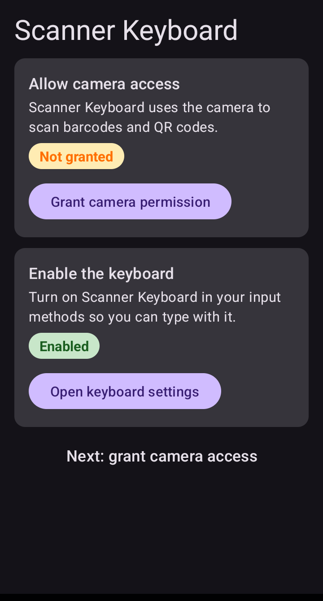
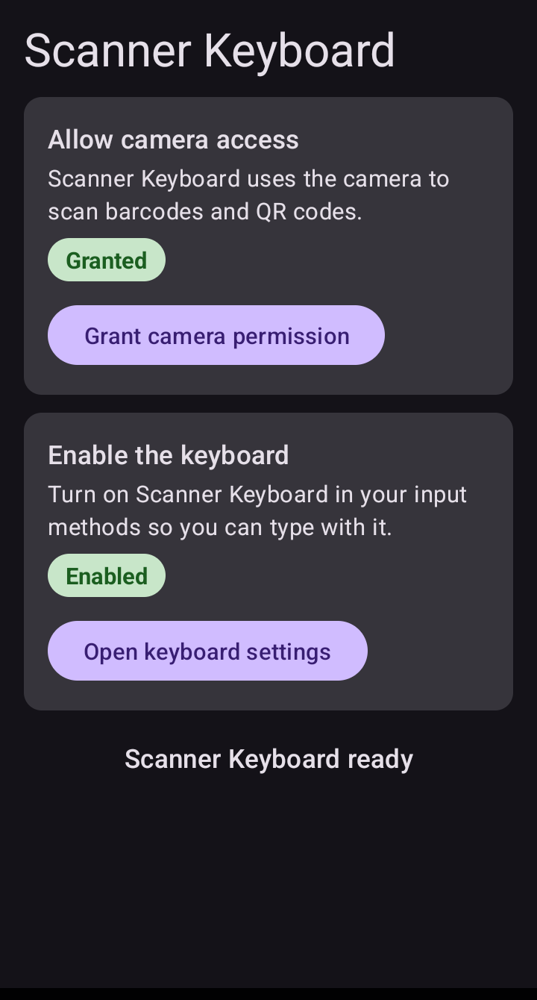
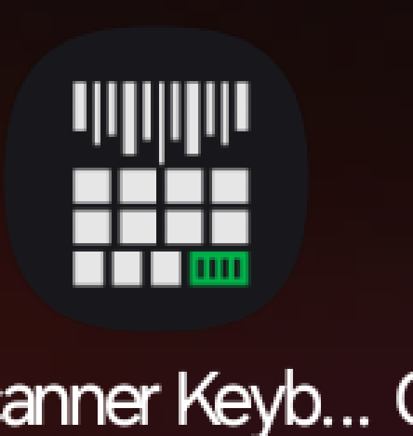

1 · Overview
Scanner Keyboard is a custom input method (an InputMethodService) that pairs a
QWERTY keyboard with a live camera viewfinder inside the keyboard window itself.
Tapping the scan key swaps the keys for a viewfinder; when a code is detected, the decoded
text is committed at the cursor of whatever app owns the focused field, the phone buzzes,
and the view returns to the keyboard — no app-switching, no clipboard round-trips.
Privacy posture
The manifest (app/src/main/AndroidManifest.xml) declares a single permission —
CAMERA — and no INTERNET permission, so the OS itself makes
network I/O impossible rather than merely unused. Barcode decoding runs entirely on-device via
ML Kit's bundled barcode-scanning model
(com.google.mlkit:barcode-scanning:17.3.0, gradle/libs.versions.toml),
with Barcode.FORMAT_ALL_FORMATS enabled
(app/src/main/java/org/ubaierbhat/android/barcodekeyboard/scanner/BarcodeAnalyzer.kt).
allowBackup="false" keeps scan history out of cloud/device-transfer backups, the
camera is released as soon as the scanner closes or the IME hides, and history lives only in the
app's private SharedPreferences. Haptics use
View.performHapticFeedback only — no VIBRATE permission.
2 · Component map
Mode state machine — BarcodeKeyboardService
A private enum class Mode { KEYBOARD, SCANNER, HISTORY }
(app/src/main/java/org/ubaierbhat/android/barcodekeyboard/service/BarcodeKeyboardService.kt)
drives which child of the root FrameLayout
(app/src/main/res/layout/input_view.xml) is visible: the
KeyboardView, the ScannerView (45 % of screen height), or the
HistoryPanelView (45 %). A fifth UI state — the inline camera
permission prompt — is shown when SCAN is tapped without the CAMERA grant.
Both the prompt's Open setup button and the toolbar's settings key
(KeyboardActionListener.onSettingsRequested()) route through
openSetup(), which launches MainActivity with
FLAG_ACTIVITY_NEW_TASK | FLAG_ACTIVITY_REORDER_TO_FRONT — the reorder flag is
what makes the wizard surface even when it already sits mid-stack in its own task; the
settings key also calls requestHideSelf() after starting the activity, and
Back returns the user to the exact field they were typing in.
onStartInputView forces the mode back to KEYBOARD (closing any scanner/history),
resolves the Enter behavior, applies the input-type-driven layer via
KeyboardView.applyInputType() (phone → dialpad, number/date → number pad,
otherwise letters — see keyboard/InputTypeLayouts.kt), and captures the clipboard;
onFinishInputView / onWindowHidden / onDestroy unconditionally
release the camera (and reset the keyboard layer, which also dismisses the accent popup).
3 · Key design decisions
CameraX inside an IME via a custom LifecycleOwner
An InputMethodService is not a LifecycleOwner, so CameraX cannot bind
to it. ScannerLifecycleOwner (scanner/ScannerLifecycleOwner.kt) wraps a
LifecycleRegistry: start() → RESUMED when the viewfinder opens,
destroy() → DESTROYED on stop, guaranteeing the camera is unbound and the
hardware released the moment the keyboard comes back.
Session-generation guard
ScannerView.start() bumps a session counter and the async
ProcessCameraProvider callback re-checks it before binding
(currentSession != session → return). Stale provider results from a stop/start
cycle (rotation, quick scan→close→scan) can therefore never resurrect a dead camera.
Bounded keyboard that scales to the window
The keyboard's total height is a single bounded dimension
(@dimen/keyboard_total_height, 264 dp) whose four key rows are
weight-proportioned, wrapped in ScaledKeyboardLayout
(keyboard/ScaledKeyboardLayout.kt) which clamps its measured height to
min(desired, parent spec). When an OEM IME frame grants less room than the
keyboard wants (measured on One UI), rows shrink proportionally instead of the window
cropping the toolbar from the top.
Input-type aware layers — Samsung-style dialpads
InputTypeLayouts.layerFor() maps the field's inputType class:
PHONE gets a 4×4 dialpad with T9-style mini letter labels (2 ABC …, long-press
0 yields +, digits commit their first letter); NUMBER/DATETIME gets a
plain 4×4 digit pad with + - . , controls. Both match the reference layout shipped
by Samsung's own keyboard (captured from Honeyboard on the test device). Letter keys are one
tap away because leaving a phone/number field restores the letters layer automatically.
Enter key that respects the field, not the OEM rewrite
Samsung's autofill rewrites incoming EditorInfo — it strips
TYPE_TEXT_FLAG_MULTI_LINE and sets IME_FLAG_NO_ENTER_ACTION, so trusting
the editor info alone breaks newlines in note fields. EnterActionResolver decodes the
flags: with NO_ENTER_ACTION the key sends a raw ENTER key event (hardware parity —
single-line TextViews self-trigger their Done action, multiline fields insert a newline); an
explicit Search/Go/Next action is performed via performEditorAction, and
EnterDispatcher falls back to the raw key event when the app does not consume it.
KEEP_ONLY_LATEST backpressure
Image analysis uses STRATEGY_KEEP_ONLY_LATEST on a dedicated single-thread
executor (ScannerView.bindPreview()). ML Kit never sees queued-up stale frames;
each ImageProxy is closed in the completion listener. A ScanThrottle
(1000 ms) guards re-fires at the analyzer level.
Auto-insert + auto-close detection UX
First non-null rawValue wins: handleBarcodeResult() commits the text
to the focused field, fires a VIRTUAL_KEY haptic, records history, and closes the
scanner — one code in, back to typing, no dialog, no confirmation tap.
allowBackup=false privacy posture
Scan history can contain URLs, IDs, and product data, so the manifest sets
android:allowBackup="false" — history and preferences never leave the device via
adb backup or transfer. Combined with the absent INTERNET permission, the only way
text leaves the app is through the field the user is typing in.
Rotation reparent fix
On configuration change the framework rebuilds the input view while the service instance
survives. Without care, the cached ScannerView/HistoryPanelView stay
attached to the old, dead container (a zombie preview). Both open paths now detach
(if (view.parent != null) removeView(view)) and re-attach to the live container;
onCreateInputView additionally stops any camera owned by the previous view.
Pinned by BarcodeKeyboardServiceRotationTest.scannerReattachesToNewContainerAfterRotation.
4 · Data flow of one scan
- Frame — CameraX
ImageAnalysisdelivers the latestImageProxytoBarcodeAnalyzer.analyze()on the scanner's single-thread executor (scanner/BarcodeAnalyzer.kt). - Decode — the frame becomes an ML Kit
InputImage(withrotationDegrees) and is processed withFORMAT_ALL_FORMATS; on the success listener the first non-nullrawValueis taken, and the proxy is always closed inaddOnCompleteListener. - Throttle —
ScanThrottle.allow()(1000 ms window) must approve the result before it is posted to the main thread (scanner/ScanThrottle.kt). - Insert —
BarcodeKeyboardService.handleBarcodeResult()re-checksmode == SCANNER, null-checkscurrentInputConnection, thencommitText(text, 1)+ haptic buzz. - History — the value is recorded into
ScanHistoryStore(newest-first, deduped, capped at 20 —history/ScanHistoryStore.kt). - Close —
closeScanner()stops the camera (ScannerLifecycleOwner.destroy()→unbindAll()) and the view swaps back to the keyboard.
The same commitText path serves history re-insertion
(handleHistoryEntrySelected()), and clipboard text captured on keyboard show
(captureClipboardEntry(), ≤500 chars, deduped, exceptions swallowed) feeds the same
store — while Scanner Keyboard is your active IME, copied codes land in history automatically.
5 · Testing summary
88 JVM unit tests (Robolectric + JUnit) run green under
./gradlew test, covering the pure logic and the lifecycle edge cases:
| Suite | File | Pins |
|---|---|---|
KeyboardStateTest | app/src/test/.../keyboard/KeyboardStateTest.kt | shift OFF→ON→auto-off, caps lock toggle, case application |
EnterActionResolverTest | app/src/test/.../keyboard/EnterActionResolverTest.kt | editor action vs newline vs raw ENTER key event |
EnterDispatcherTest | app/src/test/.../keyboard/EnterDispatcherTest.kt | performEditorAction, unhandled action falls back to ENTER key event |
InputTypeLayoutsTest | app/src/test/.../keyboard/InputTypeLayoutsTest.kt | inputType class → letters / phone dialpad / number pad mapping |
AccentMapTest | app/src/test/.../keyboard/AccentMapTest.kt | variant tables, case-insensitive lookup, unknown letters empty |
ScaledKeyboardLayoutTest | app/src/test/.../keyboard/ScaledKeyboardLayoutTest.kt | height clamped to min(desired, window), rows keep weight ratios |
BackspaceDispatcherTest | app/src/test/.../keyboard/BackspaceDispatcherTest.kt | selection → clear selected text; none → delete one char before cursor |
ScanThrottleTest | app/src/test/.../scanner/ScanThrottleTest.kt | first pass, 1000 ms window, expiry, reset (injected clock) |
DuplicateSuppressorTest | app/src/test/.../scanner/DuplicateSuppressorTest.kt | first value emits, consecutive duplicate suppressed, different value re-arms, reset forgets |
ScanTranslatorTest | app/src/test/.../scanner/ScanTranslatorTest.kt | newline → Enter, tab → Tab segments, literals kept, CR handling, collapse and edge rules |
ScanSettingsTest | app/src/test/.../scanner/ScanSettingsTest.kt | both flags default off, values persist across instances |
ScannerViewContinuousTest | app/src/test/.../scanner/ScannerViewContinuousTest.kt | switch reflects persisted state, toggling persists |
ScanHistoryStoreTest | app/src/test/.../history/ScanHistoryStoreTest.kt | newest-first, dedup move, cap 20, trim/blank rules, corrupt-data reset |
BarcodeKeyboardServiceRotationTest | app/src/test/.../service/BarcodeKeyboardServiceRotationTest.kt | scanner/history views reparent to the rebuilt input container, camera stopped |
BackspaceConnectionTest | app/src/test/.../service/BackspaceConnectionTest.kt | cursor mid-text deletes only the left char; selection sends DEL key events instead of surrounding delete |
On-device sweeps ran on a Samsung Galaxy XCover5 (Android 11, 720×1480) — the
primary test target — and earlier on a Galaxy A10s (SM-G525F, Android 14). The A10s pass covered:
live QR + EAN-13 aim-and-insert with haptic and auto-close, airplane-mode decode proving offline
operation, mid-stream permission revoke without FATAL, torch toggle, back-to-back scan sessions,
accent drag-to-select, history insert, rotation closing the camera. On the XCover5 a scripted
field matrix (9 field types in TestFieldsActivity, driven over adb) verified the
per-field Enter policy, the phone/number dialpads, and the toolbar settings key opening the app
with focus restored on Back — and Honeyboard's own phone/number pads were captured on the same
device as the layout reference. The remaining aim-dependent steps are listed in
docs/acceptance/manual-checklist.md with fresh test-code assets in
docs/acceptance/.
6 · Screens










7 · Icon
The store/launcher mark is a barcode flowing into a keyboard: variable-width scan bars hang
above a 4×3 grid of blank keys, and exactly one key — wide, bottom-right, in scanner green
#00C853 — carries a tiny barcode glyph. White on keyboard-surface charcoal
#1B1B1F, no letters, legible at 48 dp. Every asset (legacy PNGs per density,
square + round-masked, adaptive foreground previews, 512 px store art, and the adaptive
foreground/monochrome vectors) is rendered deterministically by
tools/generate_icons.py — pure stdlib PNG writer, one shared unit-grid geometry.
The Play store feature graphic (1024×500) reuses the same motif and palette, rendered by
tools/generate_feature_graphic.py.
docs/store/icon-512.png

store/adaptive-foreground-216.png (shown on charcoal; layer itself is transparent)8 · Verification
How this build was verified
- ✓
./gradlew test— 88/88 unit tests green (see §5). - ✓
./gradlew assembleDebug+ install on device R58RB1N07TD (Galaxy XCover5); IME re-enabled and selected viaime enable/ime set. - ✓ 9-field input matrix green on-device: per-field editor actions, phone/number dialpad commits, settings key opens the wizard and hides the keyboard, Back restores focus to the exact field.
- ✓ Launcher icon observed in the app drawer — adaptive foreground vector + charcoal background color, system-masked to the device shape, no icon-load errors in logcat; legacy
ic_launcher_roundrenders the same mark circular-masked. - ✓ Every screenshot in §6 was captured fresh from this build on that device.
- ✓ Generator determinism: two consecutive runs produce byte-identical PNGs and XMLs.
- ✓ Acceptance sweep items (live QR/EAN-13 insert, airplane-mode, revoke-mid-use, rotation, torch, accents, history) as described in
docs/acceptance/manual-checklist.md— aim-dependent steps require a human and that file is the running checklist.